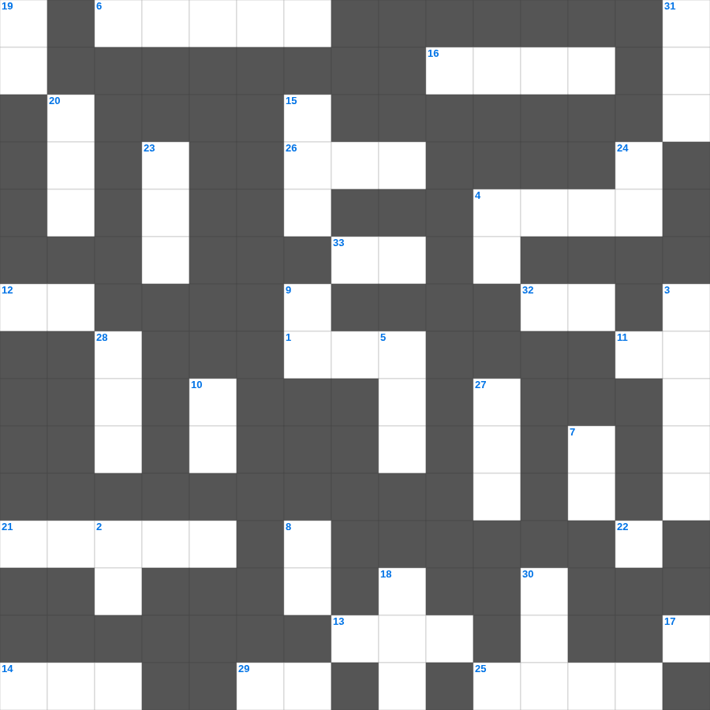

성경 상식: 지명(구약)
📖 이 글은 어떤 내용인가요?
구약 성경에는 이스라엘 역사와 신앙의 무대가 된 다양한 지명들이 등장합니다. 에덴, 가나안, 시내산, 예루살렘, 바벨론 등은 각각 중요한 사건의 배경이 되는 장소입니다. 이 퍼즐은 구약 속 지명들을 통해 성경의 지리적 배경을 이해하는 데 도움을 줍니다.
📚 핵심 포인트
에덴과 바벨 · 가나안 땅 · 시내산 · 예루살렘 · 바벨론과 앗수르
성경 상식의 말씀을 퀴즈로 배우는 성경 상식 무료 성경퀴즈입니다. 가로 힌트와 세로 힌트를 보고 35개의 단어를 맞춰보세요. 인쇄도 가능하고 정답 확인도 바로 되니 소그룹 모임이나 가정 예배 시간에도 활용하실 수 있습니다.

📝 가로 힌트
1. 평안히 눕고 이것하기도 하리니
2. 사자 굴에서도 살아남은 사람
4. 마태 마가 누가 다음 복음서
6. 바울이 아덴(아테네)에서 복음을 전한 곳
11. 사랑받는 제자로 불린 사람
12. 네 이것을 공경하라
13. 노아의 방주에 비가 내린 일수
14. 죄를 속하기 위해 드리는 제사
16. 눈물의 선지자로 불리는 사람
21. 베드로와 안드레의 고향
25. 빌립이 전도한 제자
26. 이스라엘의 유일한 여성 사사
29. 야곱의 아들 수
32. 제물을 통째로 태워 드리는 제사
33. 곡물로 드리는 제사
📝 세로 힌트
2. 바울의 고향
3. 성경의 맨 마지막 책
4. 물고기 배 속에서 회개한 선지자
5. 이것 하지 말라(남의 물건을 가져감)
7. 나의 이것을 너희에게 주노라
8. 아무것도 이것하지 말고 오직 기도와 간구로
9. 여호와는 나의 이것이시니 내게 부족함이 없으리로다
10. 믿음은 바라는 것들의 이것
15. 안드레의 형제
17. 겨자씨 한 알 만한 믿음이 있으면 이 이것을 옮기리라
18. 예수님이 광야에서 금식하신 일수
19. 여호수아가 기도할 때 멈춘 것
20. 이사악의 아내
22. 모세가 반석을 치자 나온 것
23. 예수님이 자라나신 동네
24. 오직 의인은 이것으로 말미암아 살리라
27. 나아만 장군이 문둥병을 고친 강
28. 바울의 1차 전교 여행 출발지
30. 예수님이 십자가에 못 박히신 곳
31. 하나님과 화목하기 위해 드리는 제사
📖 함께 읽으면 좋은 성경사전
퍼즐을 풀기 전에 읽으면 힌트가 쉬워지고, 풀고 나서 읽으면 내용을 한 번 더 복습할 수 있습니다.
🧩 이 퍼즐에서 배우는 내용
이 퍼즐은 성경 상식: 지명(구약)의 핵심 단어와 개념을 자연스럽게 복습할 수 있도록 구성되었습니다. 주일학교 수업이나 개인 성경공부에서 학습 내용을 점검하는 용도로 바로 활용할 수 있습니다.
🏷️ 키워드
성경 상식 무료 성경퀴즈, 성경 상식, 십자가로세로, 성경퀴즈, 말씀퀴즈, 가로세로퍼즐